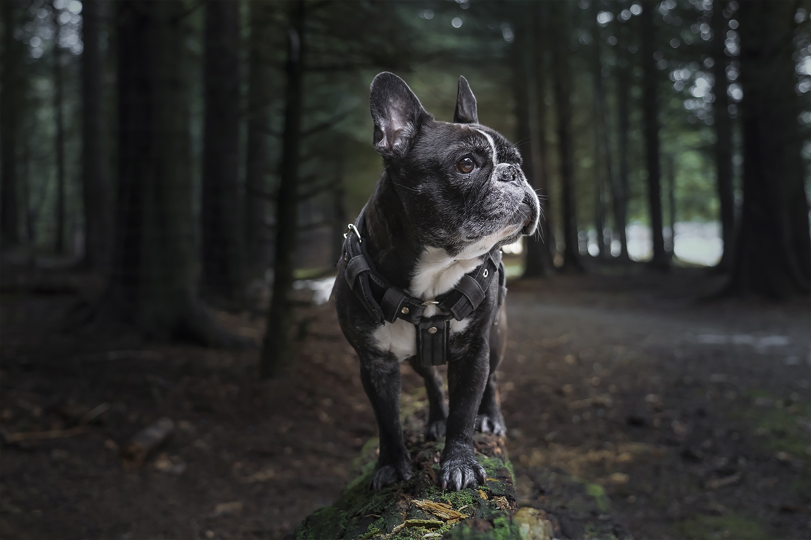
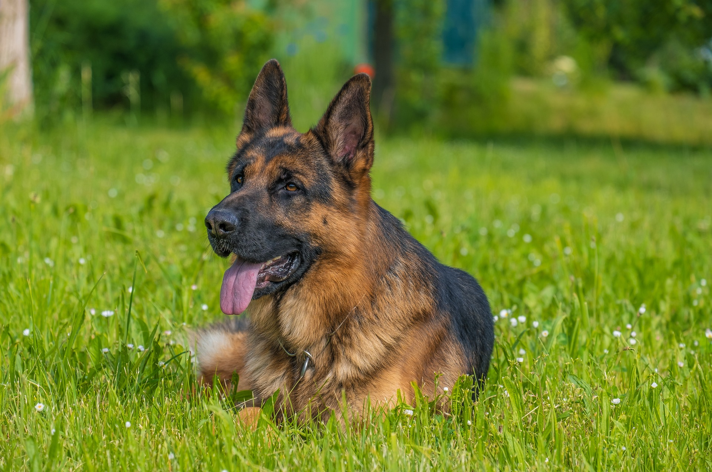
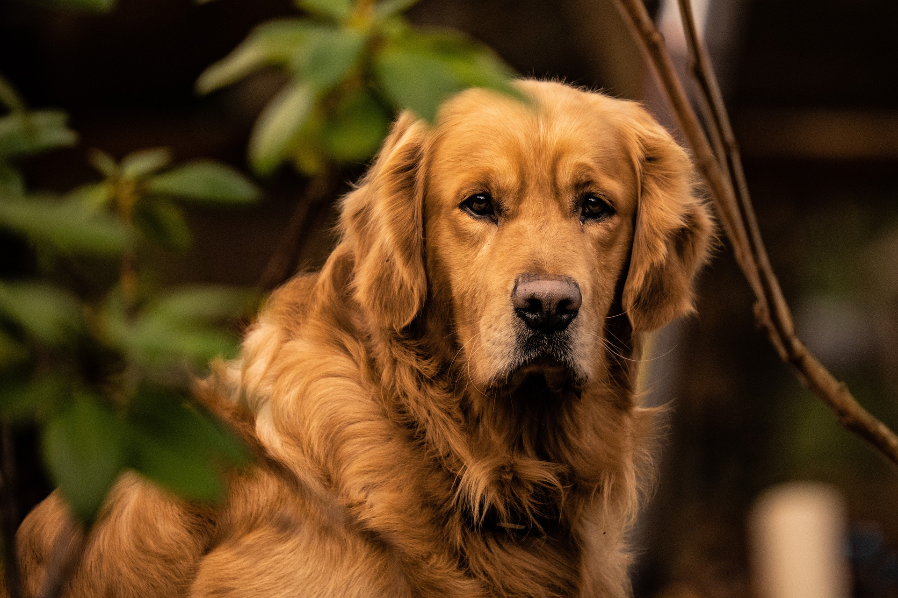

French Bulldog

Playful and Affectionate: Known for their bat-like ears and friendly nature, French Bulldogs are great companions and adapt well to apartment living.
German Shepherd

Loyal and Protective: German Shepherds are intelligent, confident, and courageous. They are often used in police and military work due to their versatility and protective instincts.
Golden Retriever

Friendly and Intelligent: Golden Retrievers are gentle, loyal, and highly trainable. They are great with families and excel in various roles, including service and therapy work.
Labrador Retriever

Loyal and Energetic: Labradors are intelligent, friendly, and make excellent family pets. They are also known for their love of water and retrieving.
Poodle

Intelligent and Elegant: Poodles are known for their intelligence, elegance, and hypoallergenic coat. They come in various sizes and are highly trainable, making them great companions.